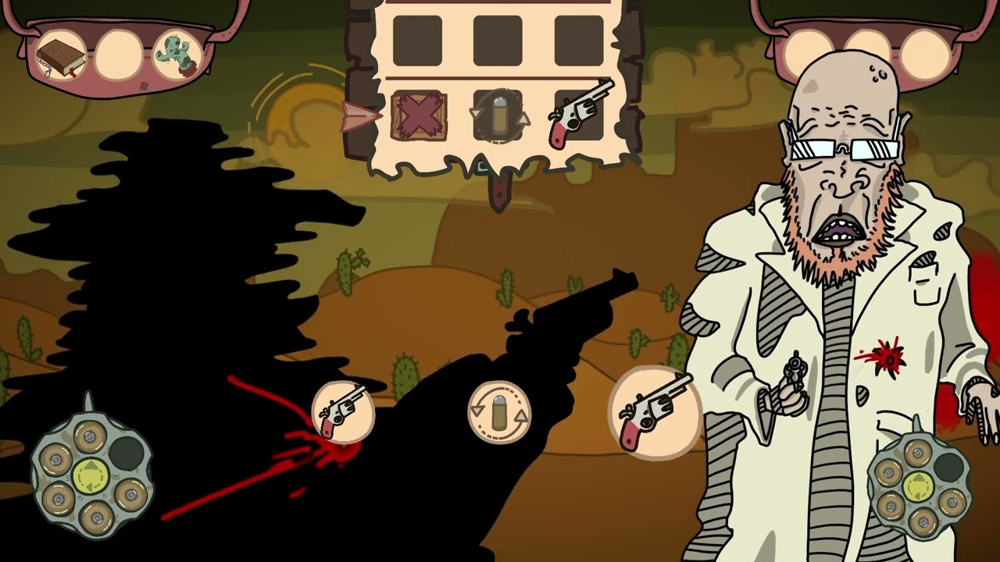
Le Revolver est l’arme de base. Il possède un barillet de 6 balles et doit être rechargé après chaque tir. Il a 100% de précision.
ABANDON WEST est un Roguelike 2D turn based. Vous y incarnez un cowboy ramené d’entre les morts par un croque-mort véreux. Votre mission ? Retrouver l’homme qui vous a tué et lui rendre la monnaie de sa pièce.
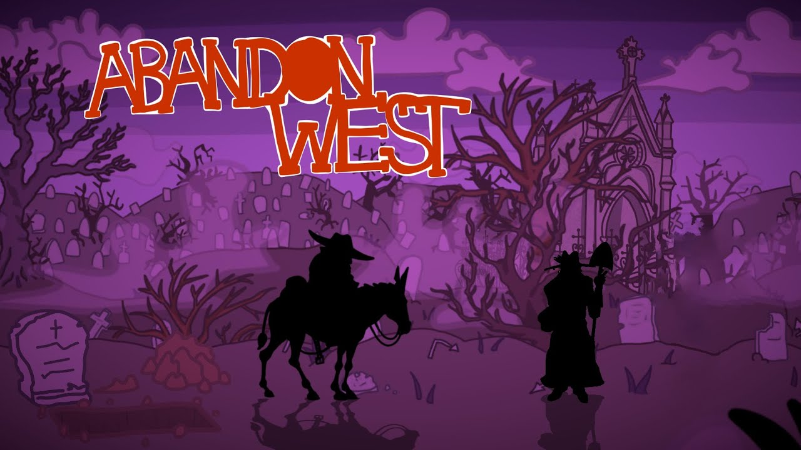
Dans ce Far West impitoyable, vous devez récolter des indices pour retrouver votre meurtrier, mais chaque rencontre pourrait être fatale... Allez-vous faire confiance ou tirer le premier ?
Oscillant entre humour macabre et ton décalé, ABANDON WEST est toujours en développement.
Sur ce projet, je m’occupe du Combat design, de la Programmation sur Unity, et de toutes les animations. Entouré de 2 artistes 2D, 1 UX designer, 1 Narratif designer et 1 Produceuse nous comptons le publier sur Steam dans quelques mois.
Pour arriver au bout de l’ouest et retrouver votre bourreau, vous devez avancer pendant 10 jours sans mourir et en ayant réuni assez d’indices sur votre cible.
Mais la faucheuse vous guette à chaque pas... Mort de faim, mort par balle, mort intoxiqué par un cactus, mort par bêtise (en oubliant de recharger votre arme), la liste est longue, vous n’avez qu’à choisir votre peine.
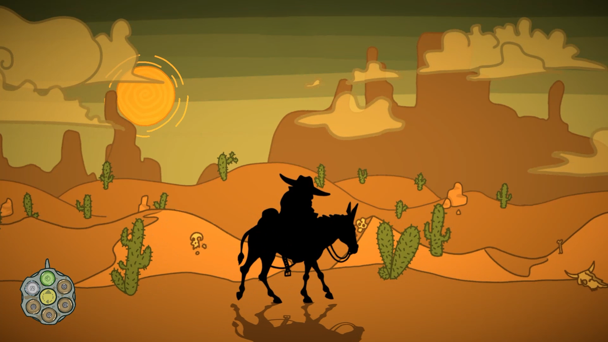
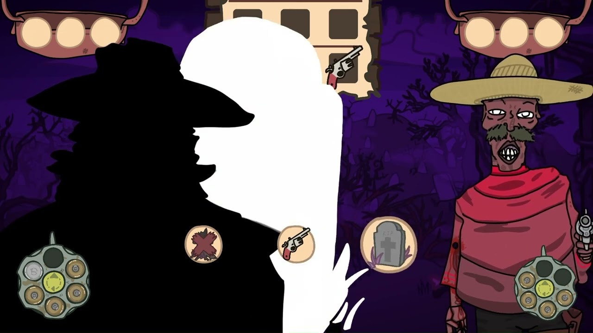
Dans ABANDON WEST, les combats sont pensés pour être rapides et mortels, comme un duel de cowboy.
Le joueur et l’ennemi n’ont que 2 PV et ont des réserves de balles et de cachettes limitées.
Le combat se déroule tour par tour, jusqu’à la mort d’un des deux participants. Chaque tour est composé de 3 temps, chacun opposant une action joueur et une action ennemi.
Les actions possibles sont : tirer, recharger, se cacher, utiliser un artefact, ou attendre.
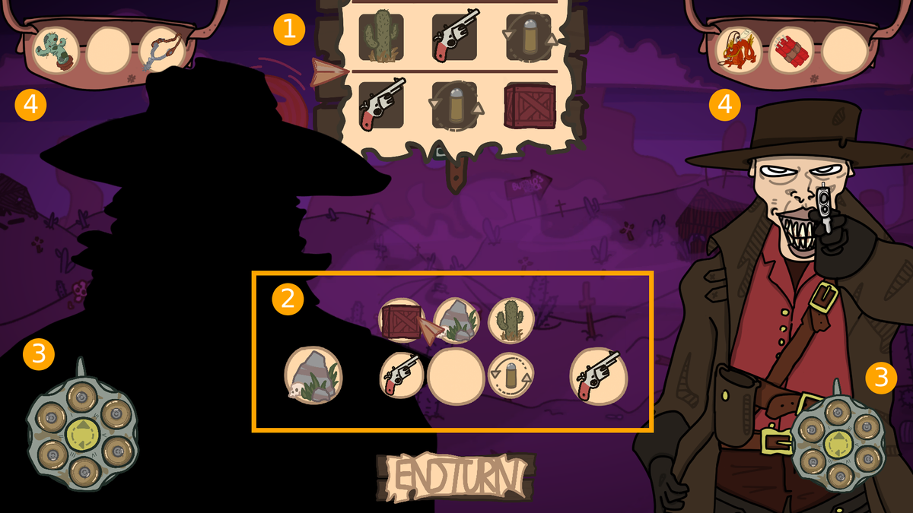
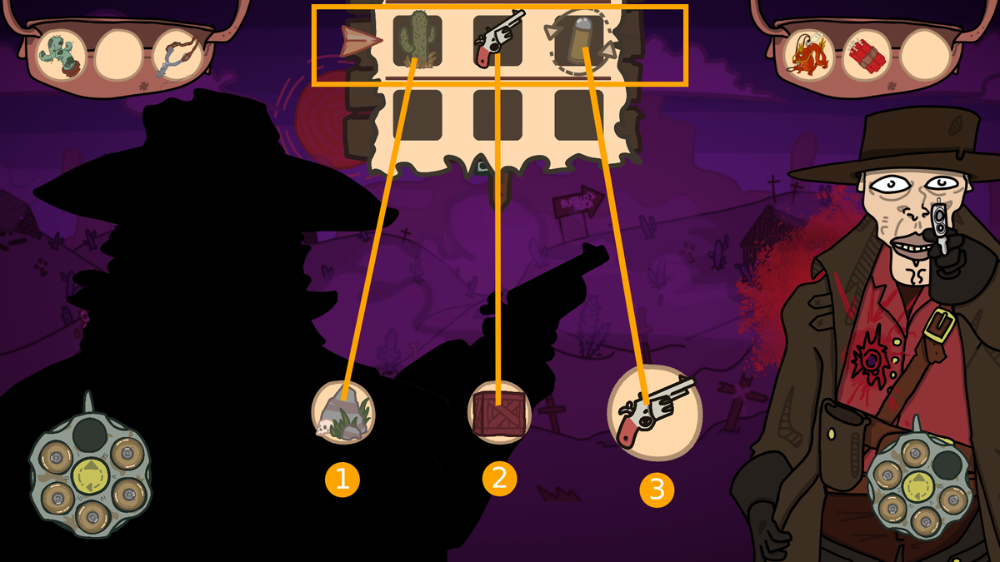
Futurs probables : à la fin du tour l’adversaire va choisir l’une des deux lignes et faire ses actions de gauche à droite.
Bulles d’action : le joueur peut y placer ses actions en s’adaptant au mieux aux différents futurs probables. À la fin du tour, elles se joueront en même temps que celles du futur probable de l’adversaire.
Barillet : tourne dans le sens horaire. La balle chargée est celle du haut.
Artefacts : objet à effet passif, ou activable dans les bulles d’action.
Le joueur se cache (rocher). L’ennemi se cache (cactus).
Le joueur se cache (caisse). L’ennemi tire dans la caisse.
Le joueur tire et touche l’ennemi. L’ennemi recharge et est touché. Comme le joueur et l’ennemi n’ont que 2 PV, il ne lui en reste plus qu’un.
Si le joueur et l’ennemi se cachent derrière le même objet, une bagarre se déclenche dont l’issue est aléatoire (50/50). Le perdant subit 1 blessure.
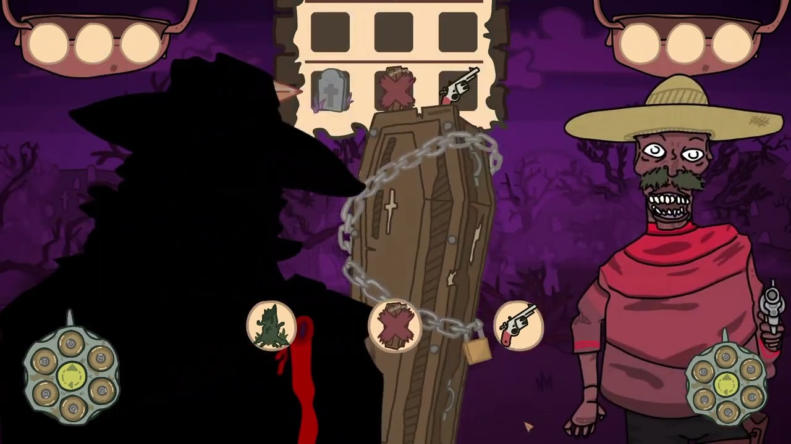

Le Revolver est l’arme de base. Il possède un barillet de 6 balles et doit être rechargé après chaque tir. Il a 100% de précision.
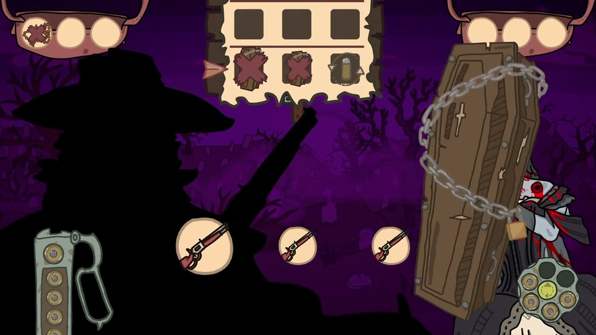
Winchester a 12 balles dans son chargeur et se recharge automatiquement après chaque tir. Son seul point noir est sa précision de 50%.
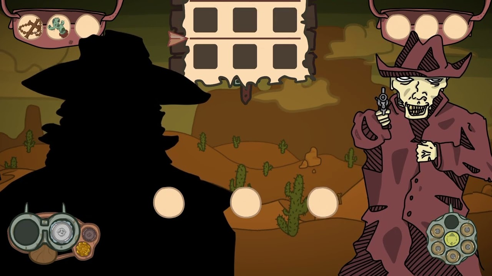
Le Shotgun peut tirer jusqu’à deux fois sans avoir besoin de recharger. Il peut transporter 4 balles et a une précision de 90%.
En plus des trois armes, les balles et les artefacts viennent approfondir le gameplay de combat et donner plus d’options stratégiques au joueur.
Les balles ne peuvent être équiper qu’entre les combats et sont a usage unique. Les artefacts peuvent être à usage unique ou donner un effet passif durable.
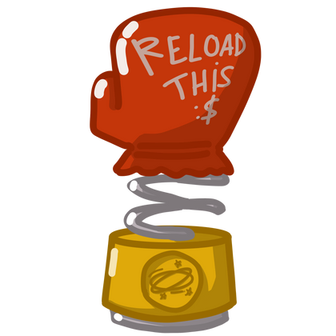
Si touche pendant que l’ennemi recharge, annule son rechargement.
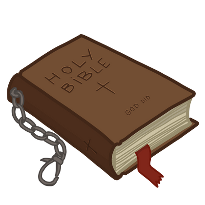
Esquive la balle qui allait vous tuer. Cette balle s’équipe dans votre barillet.
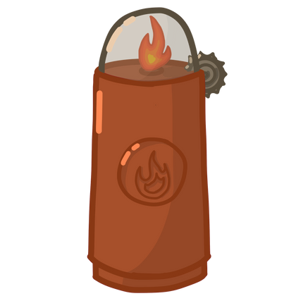
Détruit en un coup les cachettes sensibles au feu (cactus, caisses, barils…).
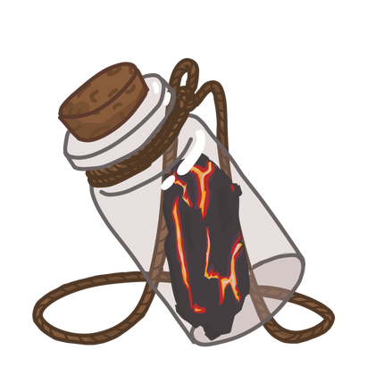
Quand une cachette est détruite par le feu (ex : balle inflammable), récupère 1 PV.
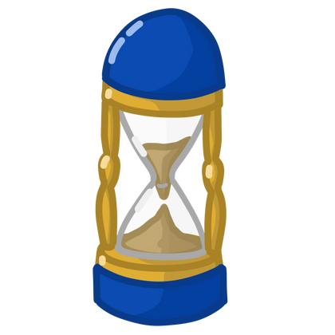
Stoppe le tour en cours. Les actions suivantes ne sont pas jouées.
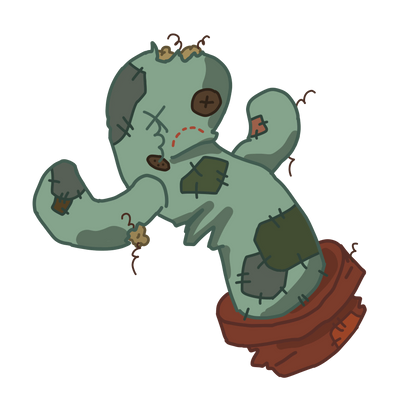
Renforce les cachettes cactus (+3 PV max). Inutile contre les balles inflammables.
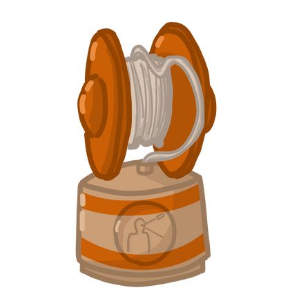
Revient dans le barillet à chaque fois qu’elle touche l’adversaire.
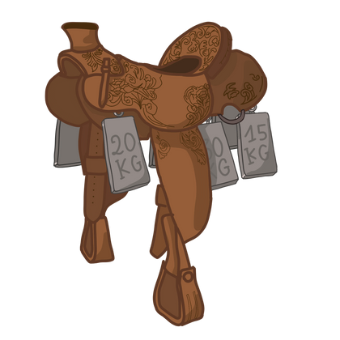
La Bourrique est très lente mais vous augmentez grandement votre précision.
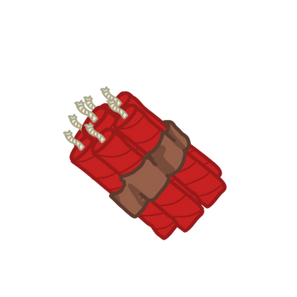
Détruit toutes les cachettes.
Différents builds émergent de l’association de certaines balles ou artefacts avec des armes en particulier. Au joueur de les trouver et de les exploiter.
Par exemple, si le joueur a un stock de balles yoyo et une Winchester (recharge automatiquement), il peut tirer en continu tant qu’il ne rate pas sa cible.
Trouver un artefact qui augmente sa précision ou un qui empêche l’adversaire de se cacher lui permettrait de compléter son build.